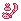

火焰斧枪 ～ 烈焰炎戈戟 | 怪物猎人双十字
火焰斧枪 派生 - 【MHXX】怪物猎人双十字
|
稀有度6 火焰斧枪 → 烈焰炎戈戟 |
火焰斧枪 → 烈焰炎戈戟的性能
期待值→期待值计算相关
| 等级 | 性能 | 期待値 | 斩位 |
|---|---|---|---|
| LV1 |
攻击：160 会心25% 火24 打击 孔槽：- - - |
223+25
[■青20] 223+25 [■青45] 245+27 [] |
|
| LV2 |
攻击：170 会心25% 火36 打击 孔槽：- - - |
235+38
[■青30] [■白5] 259+40 [■白30] |
|
| LV3 |
攻击：180 会心25% 火38 打击 孔槽：- - - |
273+42
[■白10] 273+42 [■白35] 273+42 [] |
|
|
LV4
[XX] |
攻击：240 会心25% 火41 打击 孔槽：◯ - - |
357+46
[■白30] [■白55] 357+46 [■白80] |
|
|
LV5
[XX] |
攻击：260 会心25% 火43 打击 孔槽：◯ - - |
406+51
[■紫10] 406+51 [■紫35] 406+51 [] |
|
|
LV6
[XX] |
攻击：280 会心25% 火45 打击 孔槽：◯ - - |
435+54
[■紫20] [■紫45] 435+54 [■紫70] |
|
火焰斧枪 → 烈焰炎戈戟的强化
| 名称 | 必要素材 [强化] | 可强化/派生 |
|---|---|---|
| 火焰斧枪 |
炎戈龙的上鳍 x4 炎戈龙的碇口 x1 狱炎石 x5 14000z 入手端材：炎戈龙的上端材 x2 |
火焰斧枪2
|
| 火焰斧枪2 |
炎戈龙的尾巴 x2 狞猛之炎鱗 x3 炎戈龙素材[上位] x8 28000z 入手端材：狞猛之端材 x2 |
烈焰斧枪3
角龙角虫棍 |
| 烈焰斧枪3 |
覇龙的大棘 x3 狞猛化炎戈龙壳 x3 炎戈龙素材[上位] x12 42000z 入手端材：炎戈龙的猛端材 x2 |
烈焰斧枪4
|
|
烈焰斧枪4
[XX] |
炎戈龙的特上鳍 x4 炎戈龙的刚爪 x1 真红莲石 x5 60200z |
烈焰斧枪5
|
|
烈焰斧枪5
[XX] |
覇龙的重尾 x1 狞猛之狱炎鱗 x4 炎戈龙素材[G级] x8 78400z |
烈焰炎戈戟6
|
|
烈焰炎戈戟6
[XX] |
覇龙的重棘 x3 狞猛化炎戈龙重壳 x3 炎戈龙素材[G级] x12 96600z |
武器説明
火焰斧枪
炎に鍛えられし炎戈龙的素材を操虫棍に昇華。目を灼くよう之鮮烈之赤が獲物に躍り掛かる。
炎に鍛えられし炎戈龙的素材を操虫棍に昇華。目を灼くよう之鮮烈之赤が獲物に躍り掛かる。
烈焰斧枪
火焰斧枪的鮮烈之る赤を极限まで究めた最终形态。美し色炎的奔流に魅せられる。
火焰斧枪的鮮烈之る赤を极限まで究めた最终形态。美し色炎的奔流に魅せられる。
烈焰炎戈戟
狩人的魂が呼び觉ました、火焰斧枪的极致。
狩人的魂が呼び觉ました、火焰斧枪的极致。
火焰斧枪的入手方法
| 武器名 | 必要素材 |
|---|---|
 骨制虫棍
骨制虫棍
↓ |
[商店购入] |
|
骨制虫棍2
↓ |
|
|
骨制虫棍3
↓ |
|
|
骨制虫棍4
↓ |
|
 坚实长棍
坚实长棍
↓ |
[商店购入] |
|
坚实长棍2
↓ |
|
|
坚实长棍3
↓ |
|
|
坚实长棍4
↓ |
|
| 火焰斧枪 |
火焰斧枪关联的派生表
骨制虫棍
[生产]
[购入]
┗
骨制虫棍2
┣
骨制虫棍3
┃┣
骨制虫棍4
┃┃┣
骨制虫棍5
┃┃┃┗
骨制虫棍6
┃┃┃ ┣
骨制虫棍7
┃┃┃ ┃┗
舞空长刃8
[生产G]
┃┃┃ ┃ ┗
舞空长刃9
[XX]
┃┃┃ ┃ ┗
舞空长刃10
[XX]
┃┃┃ ┃ ┗
天空骨刃11
[XX]
┃┃┃ ┣ 高空长刃
┃┃┃ ┃┗ 高空长刃2
┃┃┃ ┃ ┗ 至高长刃3
┃┃┃ ┃ ┗ 至高长刃4 [XX]
┃┃┃ ┃ ┗ 穹顶长刃5 [XX]
┃┃┃ ┗

如意棒 [生产]┃┃┃ ┗ 如意棒2
┃┃┃ ┗ 如意棒3
┃┃┃ ┗ 如意棒【石猿】4
┃┃┃ ┗ 如意棒【石猿】5 [XX]
┃┃┃ ┗ 如意棒【石猿】6 [XX]
┃┃┃ ┗ 如意棒【岩猿】7 [XX]
┃┃┗
坚实长棍
[生产]
[购入]
┃┃ ┗
坚实长棍2
┃┃ ┣
坚实长棍3
┃┃ ┃┣
坚实长棍4
┃┃ ┃┃┣
坚实极长棍5
┃┃ ┃┃┃┗
坚实极长棍6
[XX]
┃┃ ┃┃┃ ┗
高密度硬棍7
[XX]
┃┃ ┃┃┗ 火焰斧枪 [生产]
┃┃ ┃┃ ┗ 火焰斧枪2
┃┃ ┃┃ ┣ 烈焰斧枪3
┃┃ ┃┃ ┃┗ 烈焰斧枪4 [XX]
┃┃ ┃┃ ┃ ┗ 烈焰斧枪5 [XX]
┃┃ ┃┃ ┃ ┗ 烈焰炎戈戟6 [XX]
┃┃ ┃┃ ┗ 角龙角虫棍 [生产] [XX]
┃┃ ┃┃ ┗ 暴君虫棍2 [生产G] [XX]
┃┃ ┃┃ ┗ 暴君虫棍3 [XX]
┃┃ ┃┃ ┗ 暴君虫棍4 [XX]
┃┃ ┃┃ ┗ 角王废戟5 [XX]
┃┃ ┃┗ 黑暗蓝刃
┃┃ ┃ ┗ 黑暗蓝刃2
┃┃ ┃ ┗ 暗夜长刃3
┃┃ ┃ ┗ 暗夜长刃4 [XX]
┃┃ ┃ ┗ 暗夜长刃5 [XX]
┃┃ ┃ ┗ 午夜长刃6 [XX]
┃┃ ┗
碎龙虫棍
┃┃ ┗
碎龙虫棍2
┃┃ ┗
碎龙虫棍3
┃┃ ┣
碎龙虫棍4
┃┃ ┃┗
擎天爆棍5
┃┃ ┃ ┗
擎天爆棍6
[XX]
┃┃ ┃ ┗
电子爆破棍7
[XX]
┃┃ ┗ 爆碎黑曜杵
┃┃ ┗ 爆碎黑曜杵2
┃┃ ┗ 破岩爆破杵3
┃┃ ┣ 破岩爆破杵4 [XX]
┃┃ ┃┗ 破岩爆破杵5 [XX]
┃┃ ┃ ┗ 磐爆破杵6 [XX]
┃┃ ┗ 碎光黑曜杵 [XX]
┃┃ ┗ 碎光岩浆杵2 [XX]
┃┃ ┗ 碎光业火黑翔杵3 [XX]
┃┗
 针叶长春藤
针叶长春藤
┃ ┗
针叶长春藤2
┃ ┗
针叶长春藤3
┃ ┗
针叶长春藤4
┃ ┗
针叶蔓藤5
┃ ┗
针叶蔓藤6
[XX]
┃ ┗
针叶蔓藤7
[XX]
┃ ┗
麻痹蔓藤8
[XX]
┗
舞乱棍
[生产]
┣
舞乱棍2
┃┣
舞乱棍3
┃┃┗
舞乱棍4
┃┃ ┗
舞乱棍5
┃┃ ┗
舞乱棍【群】6
[生产G]
┃┃ ┗
舞乱棍【群】7
[XX]
┃┃ ┗
舞乱棍【抜群】8
[XX]
┃┗
怒怒舞乱棍
┃ ┗
怒怒舞乱棍2
┃ ┗
怒怒舞乱棍3
┃ ┗
怒怒舞乱棍4
┃ ┗
怒怒舞乱棍【首领】5
┃ ┗
怒怒舞乱棍【首领】6
[XX]
┃ ┗
怒怒舞乱棍【老大】7
[XX]
┗
甲壳轮棍
┗
甲壳轮棍2
┗
甲壳轮棍3
┗
甲壳轮棍4
┗
蟹轮棍5
┗
蟹轮棍6
[XX]
┗
蟹轮棍7
[XX]
┗
蟹轮冲击棍8
[XX]